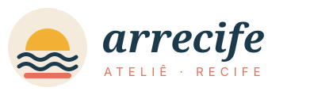
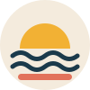

Manual da marca
Identidade visual
O guia rápido para usar a marca Arrecife Ateliê de forma consistente no site, nas redes, nas etiquetas e na loja.
Conceito
Arrecife é a palavra antiga para “recife”: a barreira de pedras que deu nome à cidade e que transforma o mar agitado em água calma. A marca traduz isso em moda leve, acolhedora e com raiz pernambucana. Ateliê reforça o feito à mão, em pequena escala.
Logo


- Símbolo: o sol (amarelo) nascendo sobre duas ondas (azul) e a linha do arrecife (coral) — a paisagem do Marco Zero ao amanhecer.
- Logotipo: “arrecife” em Fraunces itálico, minúsculo, para soar próximo e artesanal; “ATELIÊ · RECIFE” em Inter espaçado.
- Área de respiro: mantenha ao redor do logo um espaço livre igual à altura da letra “a”.
- Não faça: não distorça, não troque as cores do símbolo, não aplique sobre fotos muito poluídas.
Paleta de cores
Proporção sugerida: 60% Areia/Branco, 25% Azul Maré, 10% Coral, 5% Sol e Mangue.
Tipografia
Fraunces
Títulos e destaques. Serifada, com curvas suaves — elegância com personalidade.
Inter
Textos, botões e preços. Clara e muito legível em telas pequenas.
Tom de voz
- Próximo e caloroso, como uma conversa na calçada: “Vem ver a nova coleção!”.
- Orgulhosamente recifense: citamos bairros, ruas, o frevo, o mangue — sem caricatura.
- Leve e calmo: sem gritaria de liquidação. Promoção é convite, não pressão.
- Inclusivo: falamos com todas as pessoas, preferindo termos neutros.
Elementos gráficos
Ondas (como no rodapé da página inicial), arcos de sol nos cards e cantos arredondados (14 px). Ícones de traço fino.